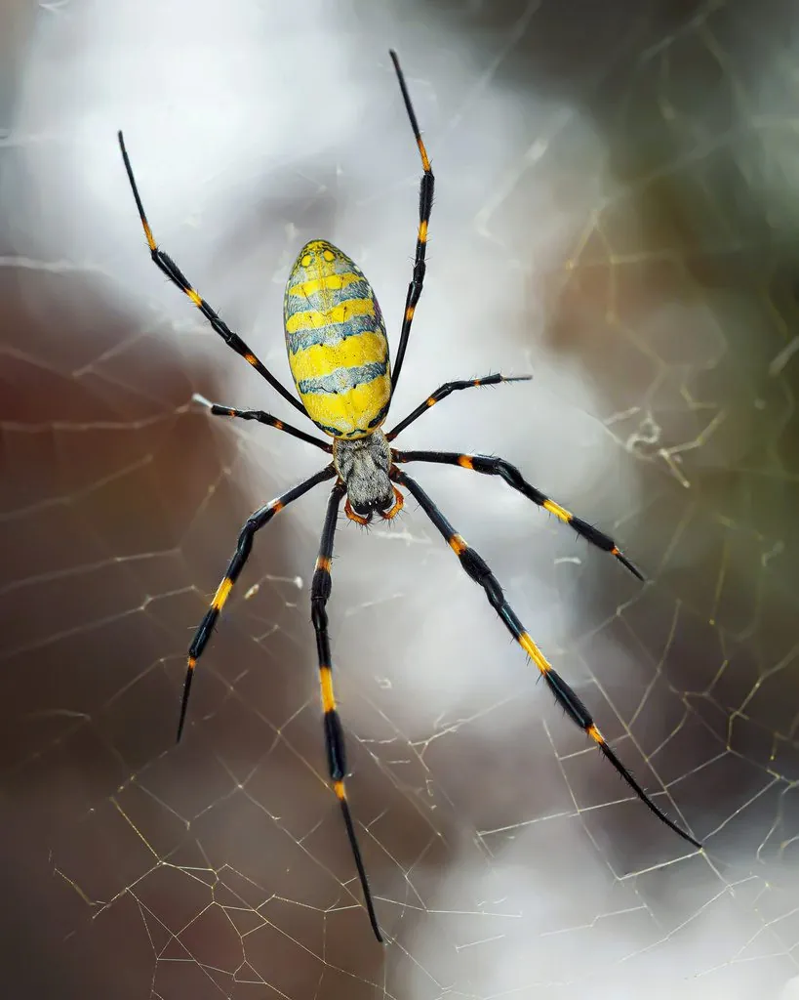

蛛形动物 · 动物界
络新妇蛛 Trichonephila clavata

东亚常见的巨型结网蜘蛛，雌蛛体色鲜艳、足展可达 10 厘米，结出带金色光泽的大圆网，对人无害。
- 分类
- 门节肢动物门纲蛛形纲目蜘蛛目科园蛛科属络新妇属
- 栖息环境
- 林缘、灌丛、花园、农田中树木之间的空隙
- 地理分布
- 中国、日本、朝鲜半岛等东亚地区
- 保护级别
- IUCN 暂无评估；中国未列入国家重点保护名录
物种志
络新妇蛛雌蛛体长 20–25 毫米，足展可达 10 厘米以上，雄蛛仅 5–7 毫米，雌雄体型差异极大。雌蛛头胸部呈银灰色，腹部呈黄黑相间的条纹状，背面有红色斑纹，八足细长，膝部常带黄色环纹；它的蛛丝在阳光下泛着金色光泽，因而又被称为“金丝蛛”。
它分布于中国、日本、朝鲜半岛等东亚地区，栖息于林缘、灌丛、花园和农田，常在树木之间结出直径可达 1 米以上的大圆网，捕食蛾类、蝇类、蝗虫等飞虫。秋季雌蛛产下含 300–500 枚卵的卵囊，藏在树皮或落叶间，卵囊在冬季保护胚胎，幼蛛来年春天孵化扩散。络新妇蛛毒性很弱，对人无害，是林地和花园中重要的益虫；它的名字来自日本传说，常被赋予神秘的色彩。
形态与习性
- 食性蛾类、蝇类、蝗虫等飞虫
- 体长雌蛛 20–25 mm，足展可达 10 cm 以上；雄蛛 5–7 mm
- 寿命约 1 年，雌蛛产卵后死亡
- 繁殖卵生，每卵囊 300–500 枚，卵囊越冬
- 活动节律昼行性，多在网中央或网边守候
- 网型大型圆网，蛛丝在阳光下呈金色光泽
趣味知识
- 络新妇蛛的蛛丝在阳光下泛着金色光泽，因此又叫“金丝蛛”。
- 雌蛛足展可达 10 厘米以上，而雄蛛只有 5–7 毫米，体型相差悬殊。
- “络新妇”之名来自日本传说中的女妖，常被赋予神秘色彩。